Briefing to the Dean · FKTEN
Design Project Digitalisation at FKTEN
Progress so far, and the way forward to a faculty platform for project-based and industry-based courses
NMK31704 Design Project team
Ts. Dr. Mohd Zamri Zahir Ahmad
Ts. Dr. Ahmad Ashraf Abdul Halim · Ts. Dr. Aini Syuhada Md Zain · Dr. Nurol Husna Che Rose
Programme representatives
Engineering (NMJ32004)
Diploma (NDJ30304)
BTech (WBL & InTra): Dr. Iszaidy Bin Ismail
Date
20 October 2026
Faculty
Faculty of Electronic Engineering & Technology
Universiti Malaysia Perlis
Today
What we would like to share
- Where we startedThe course, its scale, and two semesters of manual administration
- What we achievedGuidebook, three systems, results and user feedback, Gold AwardLive demo
- Next semester: one unified DPMSReady for Semester 2, 2026/2027 on the current platformLive demo
- The way forwardOne faculty platform for Engineering, Diploma and BTech, on the university's server
- Resources and decisionsTeam, 18-month timeline, budget and what we ask today
Part 1
Where we started
NMK31704 Design Project, Bachelor of Electronic Engineering Technology
The course
NMK31704 Design Project
- Group-based design project offered every Semester 2
- 100% continuous assessment, no final examination
- 4 to 5 students in a group, mixed across programmes
- 1 or 2 supervisors for each group, plus 2 panels for the final assessment
- 14 weeks, run by 4 course coordinators
Three Engineering Technology programmes, one course
Students, supervisors and panels all come from these three programmes, so every decision has to be balanced across them.
The scale
One semester, in numbers
Semester 2, 2025/2026. Evaluations counted as six per group: report by the supervisor and two panels, presentation by two panels, supervisor observation.
The problem
For two semesters, all of it was manual
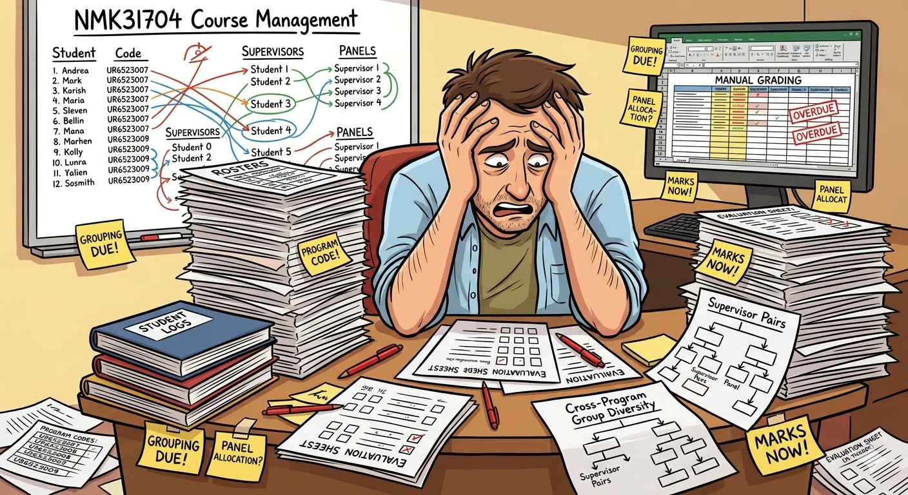
- Grouping: student records sorted by hand, then checked again for every rule
- Logbook: written in MS Word, saved as PDF, signed by the supervisor, submitted in eLearning
- Peer review: Google Form, then manual queries in Google Sheets to filter and sort each student's scores
- Assessment: a Google Sheet made to look like a system. One sheet per group, so supervisor and panels could see each other's marks, and every panel change was edited by hand
- Final materials: each group sent its report, poster and video to its panels by email and eLearning
Part 2
What we achieved
Achievement 1 · Guide
A course handbook rewritten around the systems
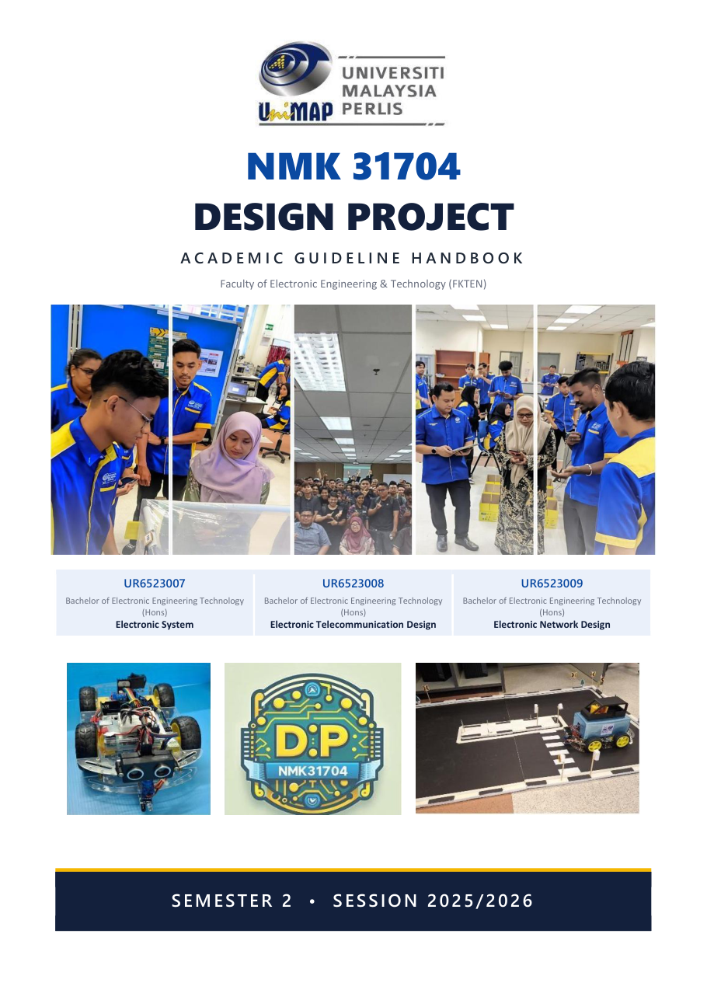
- Semester at a glance: every step, who acts, and which system is used
- Who evaluates what: each component, its marks and its evaluator in one table
- Quick answers: the questions students ask most, each pointing to the rule
- Step-by-step appendices for the e-logbook, the Gantt chart and every rubric
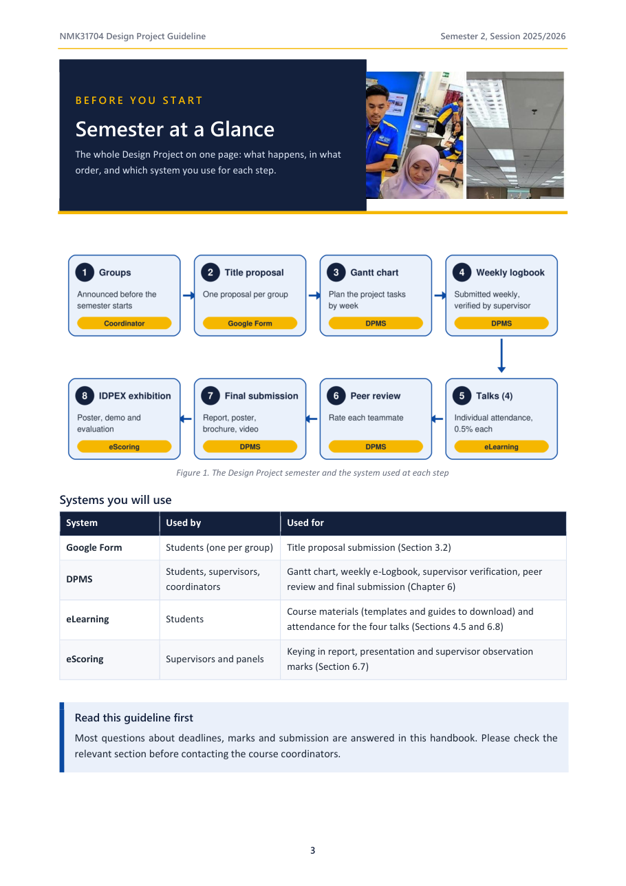
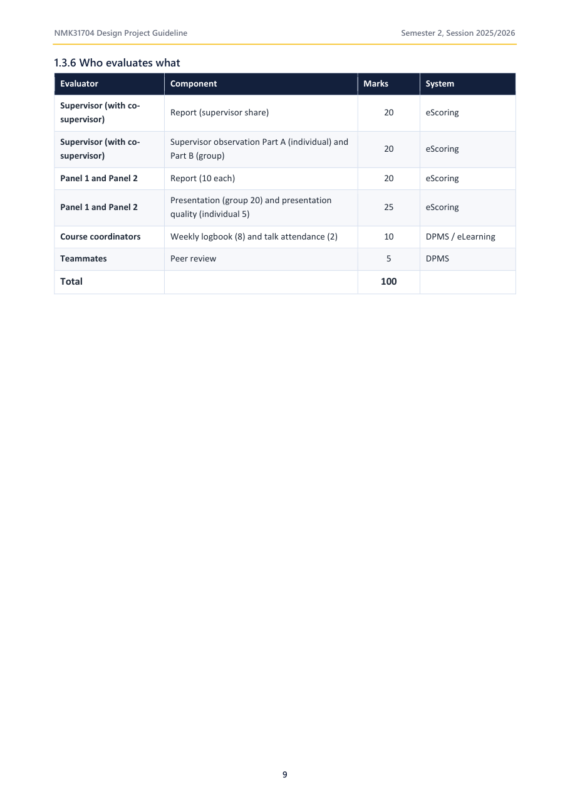
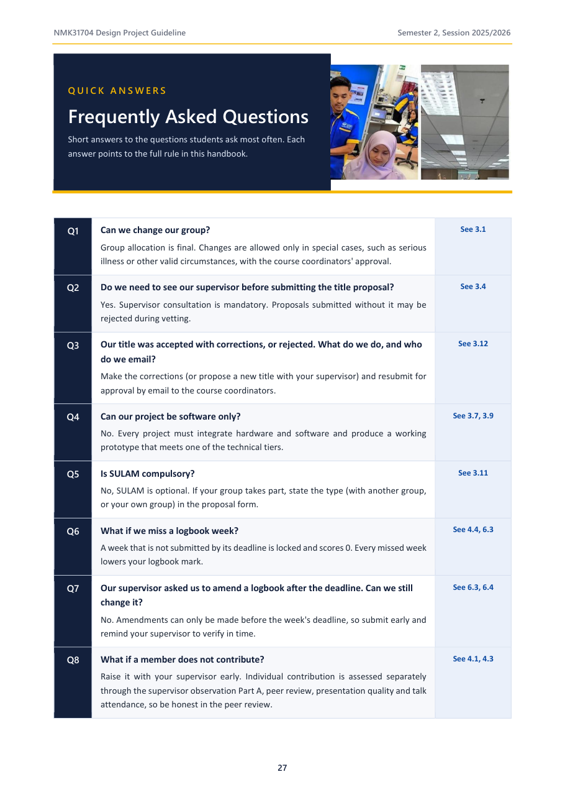
The innovation
One ecosystem, three systems, at a glance


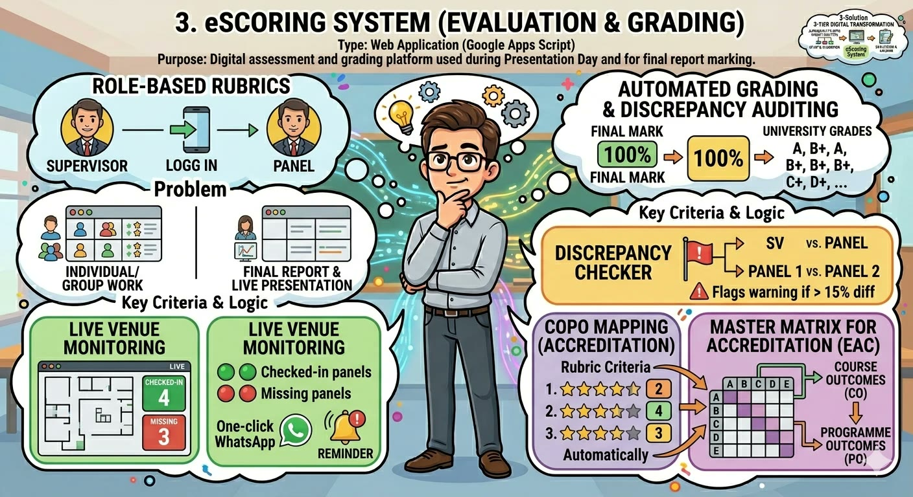
System 1 · Set up
Balanced groups and fair allocation in minutes

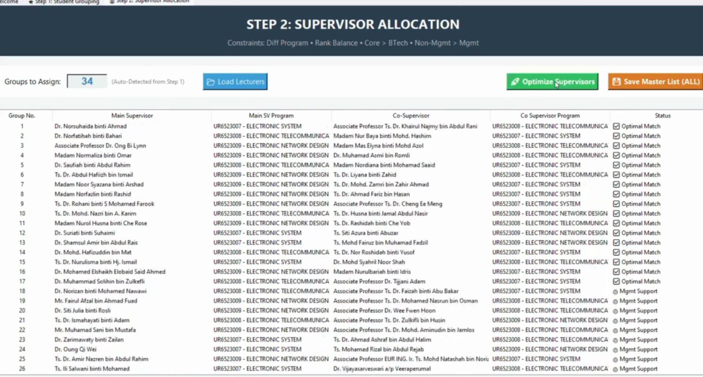
Rules the system enforces
- Every group mixes the three programmes
- CGPA, gender and race balanced across groups
- Supervisor and co-supervisor from different programmes
- Management staff assigned as co-supervisor
- No panel evaluates a group they supervise
How it works
Students are ordered by CGPA and dealt into groups in a zig-zag. The system then swaps students between groups until the gaps are small, and reports how the allocation was made.
System 2 · Run
DPMS: one place for the whole 14 weeks
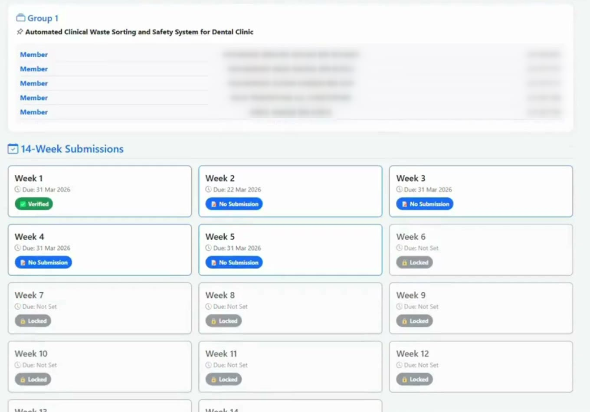
- Weekly logbook filled in on the web, with photos as evidence
- Gantt chart planned once, then ticked through the logbook each week
- Supervisor verification on screen, with email notification
- Peer review confidential, with marks calculated by the system
- Final submission of report, poster, brochure and video link
- Coordinators mark logbooks inside the same system
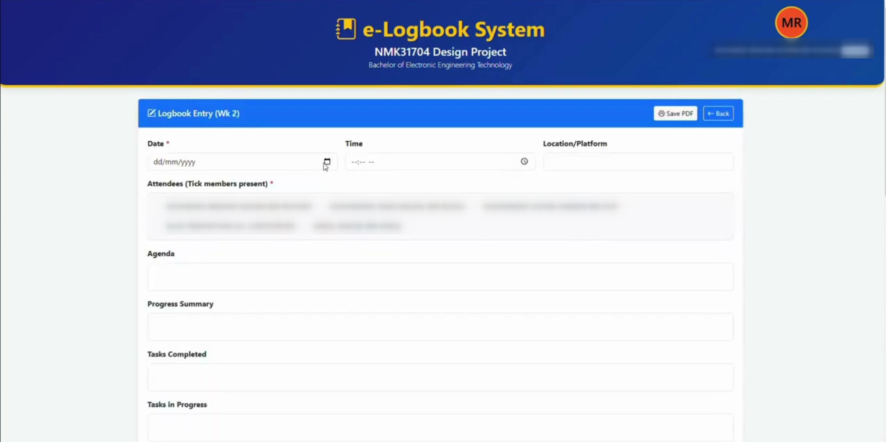
System 3 · Assess
eScoring: mark on the spot, track it live
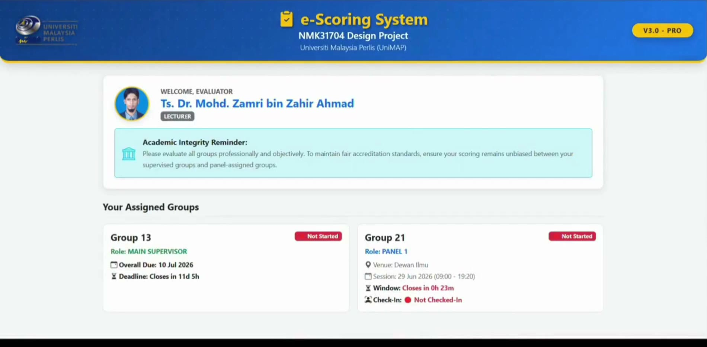

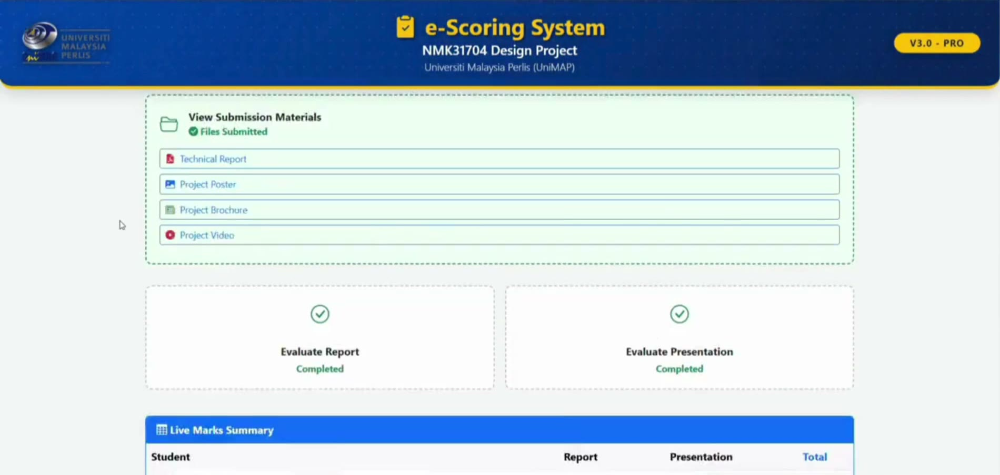


The impact
Before and after
| Task | Manual, two semesters | With the ecosystem |
|---|---|---|
| Form 43 balanced groups, assign supervisors and panels | Sorted by hand in a spreadsheet about 2 to 3 working days | Generated and checked by rules minutes |
| Collect, verify and mark 592 logbooks | Word, PDF, signature, eLearning, download one by one about 30 hours of handling | Submitted, verified and marked on one page no file handling |
| Peer review marks | Google Form, then filter and sort about 600 responses student by student | Rated in the system, marks calculated instant |
| Final materials to the panels | About 170 files sent by email and eLearning | Panels open them from the group page |
| Marks, grades, CO/PO and audit evidence | One shared sheet per group, queries rebuilt by hand about 1 to 2 working days | Private to each evaluator, calculated on submission instant |
| Who has not submitted or marked | Ask, wait, ask again | Live status for every group and evaluator |
Counts are from Semester 2, 2025/2026. Time figures and the number of peer review responses are estimates by the coordinators, not measured values.
The impact
What 41 users told us
Ease of use for their tasks
8.5 / 10
33 of 41 gave 8 or higher
Streamlines management and assessment
8.6 / 10
35 of 41 gave 8 or higher
No issues while using it
30 of 41. The other 11 reported an issue, mostly signing in and phone use.
Most useful feature
Online logbook named by 18 of 31 who answered, then the Gantt chart and supervisor verification.
What they asked for next
Better phone support, more reliable sign-in, autosave for logbook drafts.
“Overall the system makes students work much easier.”
“Easy for students to update progress and supervisors can monitor project progress.”
“Good implementation to be used in future.”
Source: DPMS User Experience Survey on forms.app, 41 responses (34 students, 6 lecturers, 1 not stated), 29 May to 23 June 2026. share.forms.app/mohdzamrizahirahmad/design-project-management-system-dpms-dpms-user-experience-survey
Recognition
Gold Award, EDIC 2026
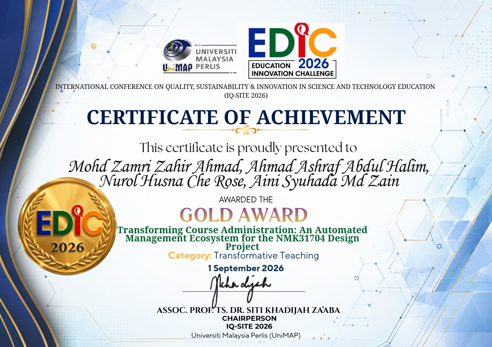
Gold Award
Education Innovation Challenge (EDIC) 2026
International Conference on Quality, Sustainability & Innovation in Science and Technology Education (IQ-SITE 2026)
CategoryTransformative Teaching
Date1 September 2026
TeamMohd Zamri Zahir Ahmad, Ahmad Ashraf Abdul Halim, Nurol Husna Che Rose, Aini Syuhada Md Zain
Live demo
The system as used in Semester 2, 2025/2026
- Grouping tool: generate balanced groups and supervisor pairs
- DPMS, student: group page and weekly logbook
- DPMS, supervisor: verify a logbook
- eScoring, panel: mark with the rubric
- Coordinator: live evaluation status and marks export
Backup if the network fails: the 6-minute video at youtu.be/Z26XAPRhVqI
Part 3
Next semester
Three systems become one unified DPMS for Semester 2, 2026/2027
Semester 2, 2026/2027
One unified DPMS, ready on the current platform
- One system, one sign-in: DPMS and eScoring merged; grouping results imported directly
- New: title proposal and vetting, blind review, accepted title goes straight to the group
- Every role on one home page: supervisor, vetter, panel and coordinator together
- Works on a phone, the most requested improvement in the survey
- Demo copy and test group for training without touching real data
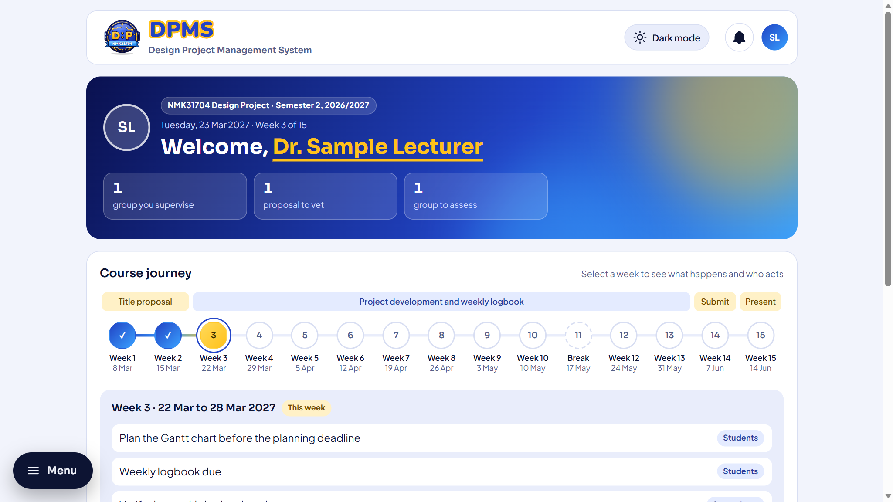
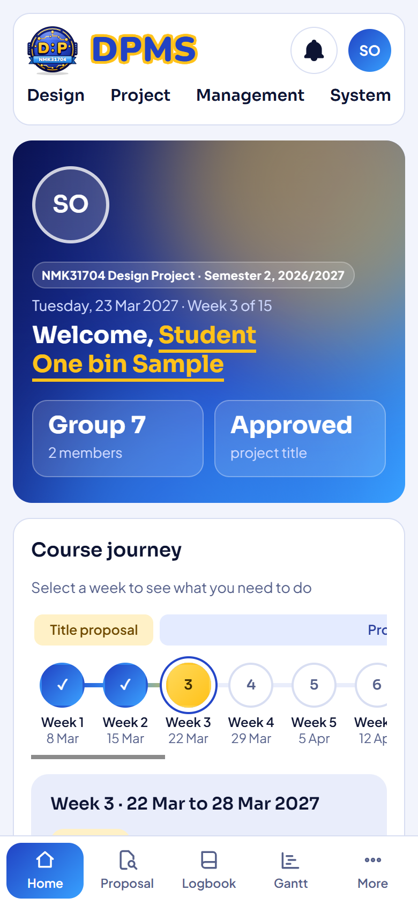
Semester 2, 2026/2027
A look inside the unified DPMS
All screens use made-up sample people.
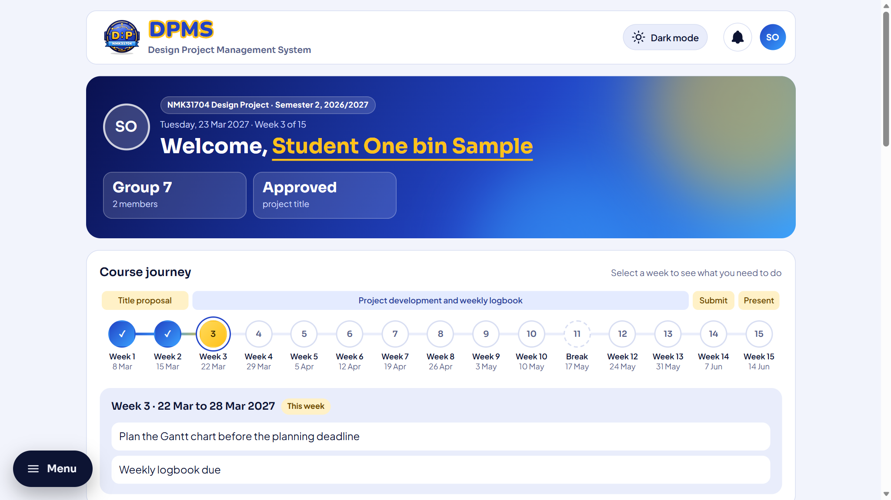
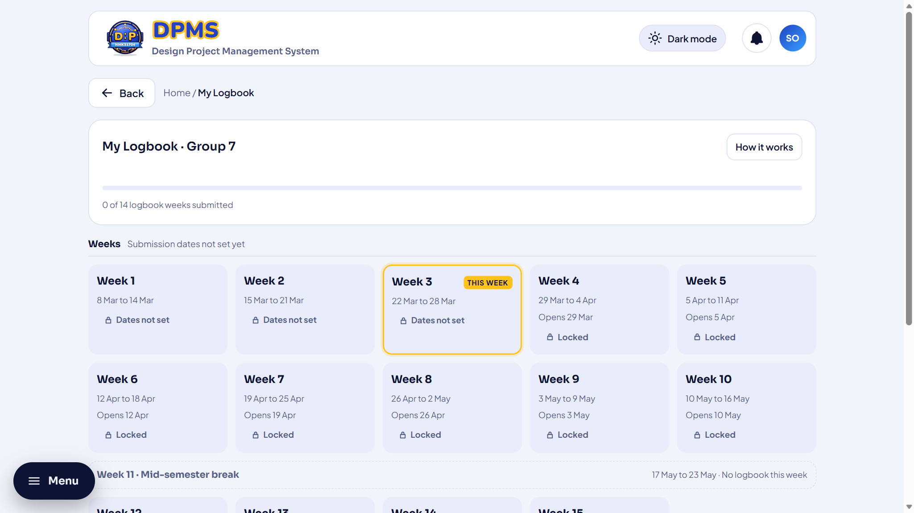
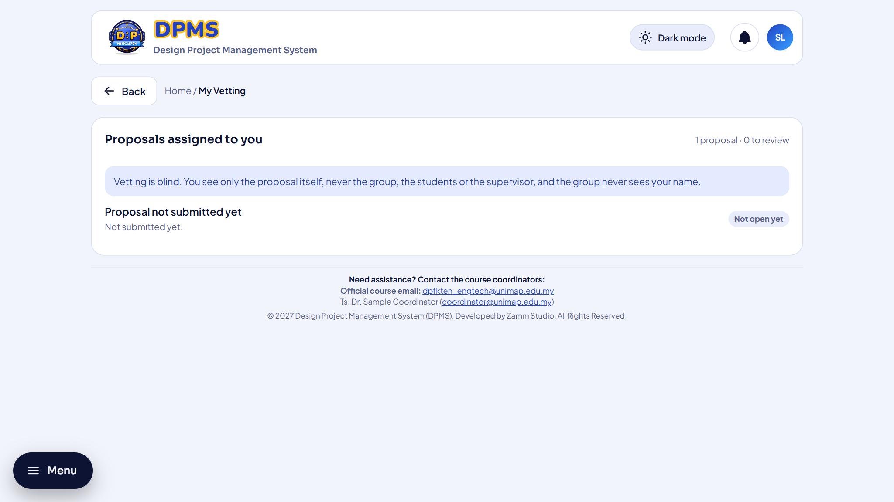
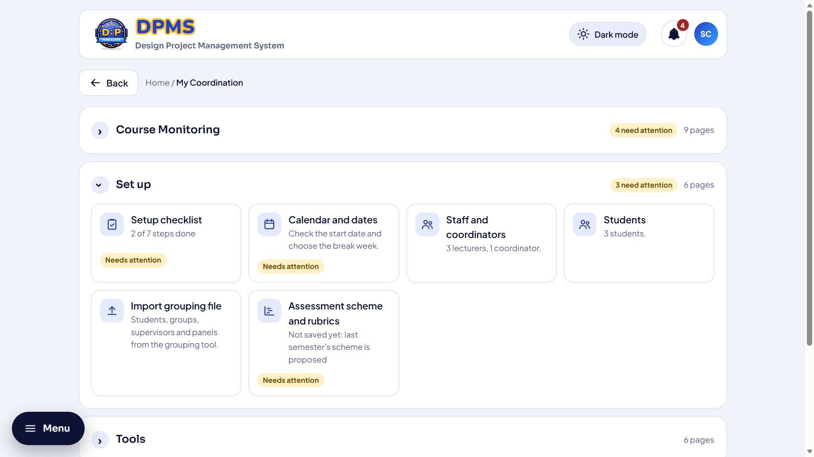
Live demo
The unified DPMS for Semester 2, 2026/2027
- Student: home page, title proposal, weekly logbook
- Lecturer: all roles on one home page; verify a logbook
- Vetter: blind review of a title proposal
- Panel: mark the report and presentation
- Coordinator: semester set-up, monitoring and results
- Phone: the same pages on a mobile screen
Shown with the built-in demo copy and sample data, so no real student record is used.
Why the next step is needed
What the current platform cannot do
Only UniMAP Google accounts
UniMAP restricts Apps Script sharing, so industry panels, industry mentors and external examiners cannot sign in.
A spreadsheet as the database
Each read or write to Google Sheets takes seconds. Pages slow down when many panels mark at once on presentation day.
Built for one course
Rules, marks and rubrics follow NMK31704. Other courses assess differently and cannot use it as it is.
Not on university servers
Student records sit in Google Drive files instead of the university's own infrastructure managed by DMDC.
Other courses still manual
Engineering design project, Diploma FYP and BTech WBL still run on Word files, Google Forms and email.
Survey feedback
11 of 41 users reported an issue, mostly signing in and phone use. A proper web platform removes the sign-in limits.
Part 4
The way forward
One FKTEN platform for project-based and industry-based learning
The proposal
Four programme groups, about 550 students a semester
| Category | Programme | Course | Students / semester |
|---|---|---|---|
| Project-based | Bachelor of Electronic Engineering Technology (UR6523007, 008, 009) | NMK31704 Design Project | 200 |
| Project-based | Bachelor of Microelectronic, Biomedical Electronic and Electronic Engineering (UR6523001, 004, 005) | NMJ32004 Integrated Design Project | 200 |
| Project-based | Diploma in Electronic Engineering (UR4523003) | NDJ30304 Final Year Project | 100 |
| Industry-based | Bachelor of Technology in Industrial Electronic Automation (UR6523011) | NMT31304, NMT32205, NMT32310 (WBL) and Industrial Training (InTra) | 50 |
| Total | 550 | ||
Title: Development of an Integrated FKTEN Digital Platform for the Management and Assessment of Project-Based and Industry-Based Learning.
The proposal
One server, two systems, four sites
UniMAP sign-in for staff and students · email invitation or one-time code for industry
DMDC server · AlmaLinux · Apache · PHP 8.3 · MySQL/MariaDB · SSL
System A: project-based courses
System B: WBL and InTra
Proposed address: designprojectfkten.unimap.edu.my, subject to DMDC approval. Each site keeps its data separate; improvements to System A reach all three sites at once.
The proposal
What each system will do
System A: project-based courses
- Grouping and allocationbalanced groups, supervisor and panel rulesProven
- Title proposal and vettingblind review, decision flows to the groupBuilt
- Gantt chart and weekly logbooksupervisor verification, coordinator markingProven
- Peer review and final submissionProven
- Supervisor and panel assessmentonline rubrics, industry panel accessProven
- Results, iGrading and CO-PO attainmentProven
- Course set-up per programmecomponents, weights, rubrics, CO-PO, panel styleNew
System B: WBL and InTra (BTech)
- Placement and eligibilitycompanies, industry mentors, CGPA checkNew
- Student compliance documentsundertaking, health declaration, insuranceNew
- Daily or weekly logbookverified by the industry mentor by link or codeNew
- Monitoring visits by lecturersNew
- Report submissionNew
- Industry and university assessmentcognitive, psychomotor and affective domainsNew
- Results, iGrading and CO-PO attainmentNew
System B · BTech
WBL and industrial training today
How an assessment form travels now
Who assesses (WBL and InTra)
Most of the marks come from people who cannot sign in to a UniMAP-only system.
Also handled separately today
- Undertaking, health declaration and insurance documents
- Logbooks and their verification by industry
- Mark compilation, 1 to 2 weeks
Presented by Dr. Iszaidy Bin Ismail, BTech representative and developer of System B.
How it will be built
From Apps Script to PHP and MySQL on the DMDC server
Now: Google Apps Script
- Unified DPMS runs NMK31704 in Semester 2, 2026/2027
- Google Sheets as the database
- UniMAP Google accounts only
- No cost, but limited speed and access
If approved: PHP + MySQL at DMDC
- The same workflows and screens, rewritten as PHP
- The 60-table design moved into MySQL
- The 1,098 checks reused to prove nothing changed
- Sign-in for industry; extended to three more programmes
Why an AI coding subscription is needed
The conversion and the new modules are done in-house by two lecturers with Claude Code, an AI coding assistant. It rewrites the Apps Script code as PHP, builds System B and runs the tests, while the developers design, review and decide. A monthly subscription gives a fixed, predictable cost; pay-per-use API billing cannot be budgeted. Development uses sample data only.
Timeline
18 months: November 2026 to April 2028
26Dec
26Jan
27Feb
27Mar
27Apr
27May
27Jun
27Jul
27Aug
27Sep
27Oct
27Nov
27Dec
27Jan
28Feb
28Mar
28Apr
28
Team
Built in-house by FKTEN lecturers
| Name | Represents | Role in the project |
|---|---|---|
| Ts. Dr. Mohd Zamri Zahir Ahmad | NMK31704 (Electronic Engineering Technology) | Project leader and developer of System A |
| Dr. Iszaidy Bin Ismail | WBL and InTra (Industrial Electronic Automation) | Developer of System B |
| Ts. Dr. Ahmad Ashraf Abdul Halim | NMK31704 (Electronic Engineering Technology) | Requirements and testing |
| Ts. Dr. Aini Syuhada Md Zain | NMK31704 (Electronic Engineering Technology) | Requirements and testing |
| Dr. Nurol Husna Che Rose | NMK31704 (Electronic Engineering Technology) | Requirements and testing |
| Programme representative | NMJ32004 (Microelectronic, Biomedical Electronic and Electronic Engineering) | Course coordinator, requirements and testing |
| Programme representative | NDJ30304 (Diploma in Electronic Engineering) | Course coordinator, requirements and testing |
| 2 industrial training students | 6 months | Testing, data entry and user support |
Resources
Budget requested: RM15,000
| Item | Quantity | RM |
|---|---|---|
| AI coding subscription, one account per developer | ||
| System A developer: Max 20x, conversion phase | 3 months | 2,660 |
| System A developer: Max 5x | 4 months | 1,775 |
| System A developer: Pro | 11 months | 975 |
| System B developer: Max 5x, build phase | 5 months | 2,215 |
| System B developer: Pro | 9 months | 800 |
| Other | ||
| Allowance, 2 industrial training students | RM500 × 6 months | 6,000 |
| Face-to-face training for coordinators | 3 sessions | 300 |
| Contingency (exchange rate, price changes) | ±2% | 275 |
| Total | 15,000 | |
What it buys
- Conversion of the unified DPMS to the university's server
- Two more project courses on the same code
- A new WBL and InTra system for BTech
What it does not need
- No vendor and no licence
- No new hardware: staff laptops
- Server from DMDC; backups in university Google Drive
- Staff training online
Subscription prices include 8% SST at RM4.10/USD (October 2026 prices).
Resources
What we will request from DMDC
| Server | Virtual machine or web hosting at the DMDC data centre |
| Software | AlmaLinux 9, Apache 2.4 with SSL, PHP 8.3, MySQL 8 or MariaDB, phpMyAdmin |
| Capacity | 2 vCPU and 4 GB RAM minimum (4 vCPU and 8 GB recommended) |
| Storage | 300 GB minimum (500 GB recommended) for reports, posters, documents and logbook photos |
| Address | designprojectfkten.unimap.edu.my with /engtech, /eng, /diplomaelectronic and /btech |
| Services | UniMAP sign-in (SSO) if available, SMTP relay for email, daily backup |
| Access | SSH/SFTP or Git for the developers |
Why the university's server
- Student records stay on university infrastructure (PDPA 2010)
- The same technology DMDC already runs for other faculty systems
- Faster than a spreadsheet, and open to industry users
Today
What we ask from the Dean
- Agreement in principleso the working paper can go to the Faculty Management Committee
- Budget of RM15,000and advice on the fund to use (proposed: FKTEN operating budget)
- Support for the DMDC requestserver, subdomain and storage as listed
- The 18-month timelineNovember 2026 to April 2028, with all four sites live in Semester 2, 2027/2028
Thank you
Questions and discussion
The team
Ts. Dr. Mohd Zamri Zahir Ahmad · Ts. Dr. Ahmad Ashraf Abdul Halim
Ts. Dr. Aini Syuhada Md Zain · Dr. Nurol Husna Che Rose
with the programme representatives for Engineering, Diploma and BTech